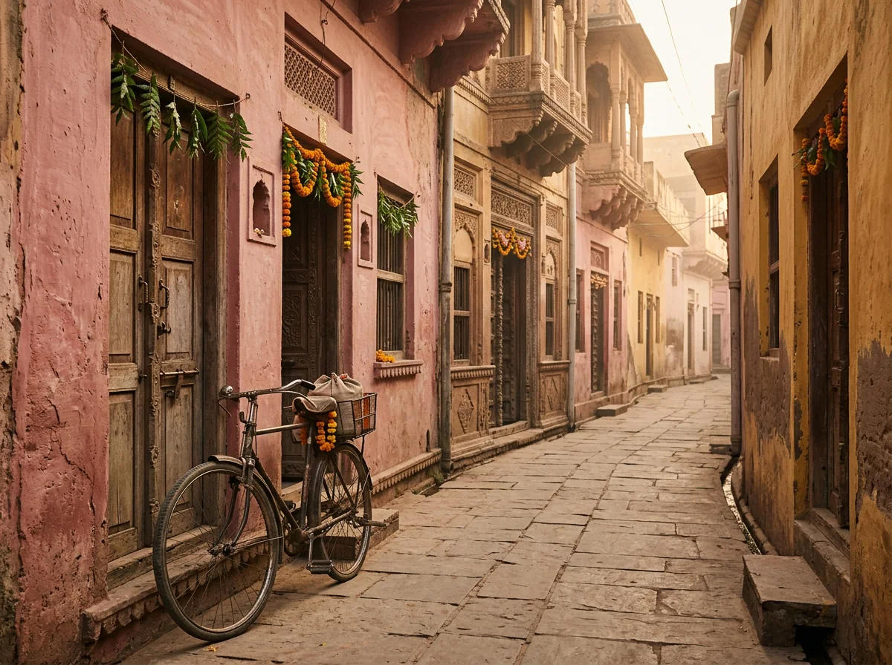
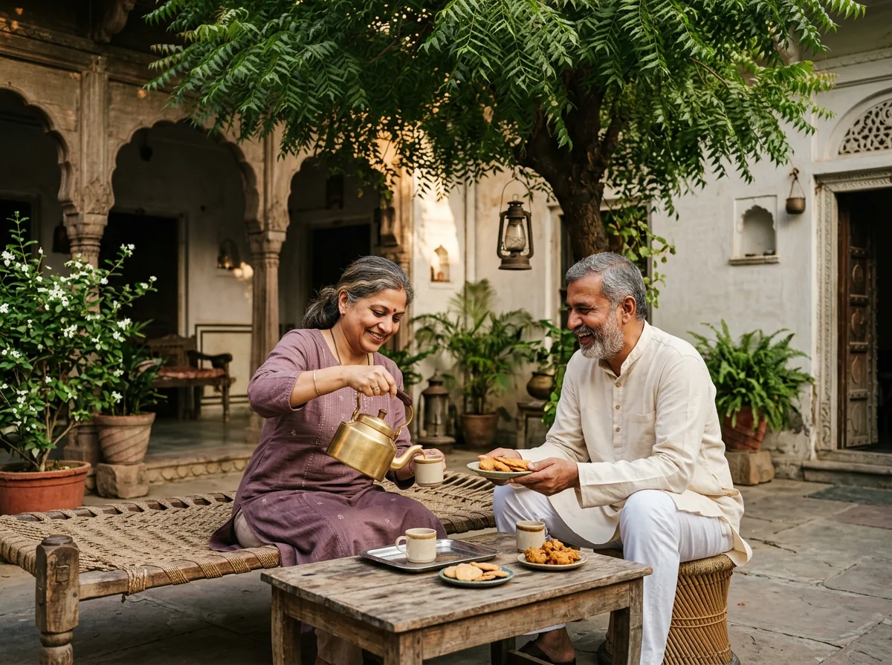
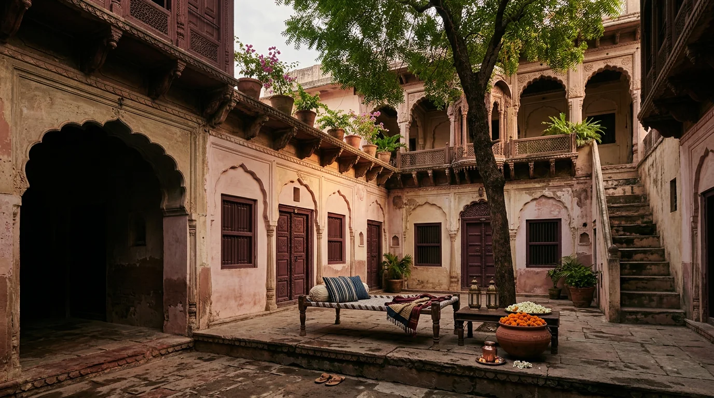

OUT IN BRAJ · 60–90 MIN
Before the lanes
find their voice.
A slow morning walk with a local host. Notice the old doorways, the first shop shutters and the small details most people hurry past.
OUT THE DOOR, INTO BRAJ
Small discoveries, shared by people who call this part of the world home.
Find your kind of day
A QUIET LANE, JUST AFTER SUNRISENO CHECKLIST REQUIRED
We’ll help you find your way around, but there’s no itinerary to keep up with. Take a gentle walk, learn the story behind a doorway, then come home when you’re ready.
OUT IN BRAJ · 60–90 MIN
A slow morning walk with a local host. Notice the old doorways, the first shop shutters and the small details most people hurry past.
 02
02AT HOME · AROUND THE TABLE
Join the kitchen for a little chopping, a lot of tasting and a meal that takes as long as good company does.

03OUT IN BRAJ · BY ARRANGEMENT
Walk the old lanes with someone who knows their stories, small shrines, craft corners and favourite pauses.

04AT HOME · WHENEVER YOU LIKE
Find a cool corner, make time for chai and let the shade move across the courtyard. Nothing more is required.
No experiences in this category just now.
ONE VERY LOOSE PLAN
Think of this as a gentle suggestion, not a schedule. Keep what sounds lovely, leave the rest.
The courtyard is at its quietest. Start there if you’re awake.
Take a turn through the lanes. Ask questions. Pause whenever something catches your eye.
Come back to a home-cooked meal, then let the afternoon stretch.
More chai, a book, a conversation. We like this part best.
WE’LL HELP YOU FIND YOUR WAY